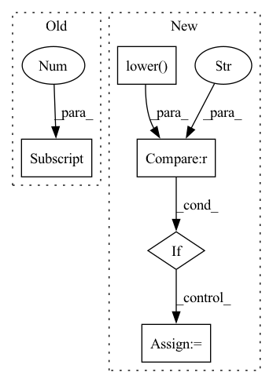

Pattern ID :21236
Before Change
if any(x in device.lower() for x in ["cuda", "gpu"]):
device_info = device.split(":")
if len(device_info) == 2 and device_info[1].isdigit():
idx = int(device_info[1] )
else:
idx = 0
if not gpu_is_available():After Change
device_type=DeviceType.GPU,
idx=_get_idx(device),
)
elif "neuron" in device.lower() :
device = _set_device(
accelerator_is_available=neuron_is_available(),
device_type=DeviceType.NEURON,
idx=_get_idx(device),In pattern: SUPERPATTERN
Frequency: 3
Non-data size: 5
Instances Fragment ID: 67925228
Project Name: nebuly-ai/nebullvm
Commit Name: b699e8a83cc84b7822d58b18e69c1d1b92503d96
Time: 2023-03-28
Author: v.sofi@nebuly.ai
File Name: nebullvm/tools/utils.py
M Class Name: AnonimousClass
N Class Name: AnonimousClass
M Method Name: check_device(1)
N Method Name: check_device(1)
M Parent Class:
N Parent Class:
M File Name: nebullvm/tools/utils.py
N File Name: nebullvm/tools/utils.py
M Start Line: 225
M End Line: 246
N Start Line: 265
N End Line: 293
Before Change
T_in, T_pred = video_in_length, T-video_in_length
for key, traj in trajs.items():
if "true_" in key or "gt_" in key:
trajs[key] = add_border_around_vid(traj, [("green", traj.shape[0] )], b_width=16)
else:
trajs[key] = add_border_around_vid(traj, [("green", T_in), ("red", T_pred)], b_width=16)
After Change
T, _, h, w = list(trajs.values())[0].shape
T_in, T_pred = video_in_length, T-video_in_length
for key, traj in trajs.items():
if "true_" in key.lower() or "gt_" in key.lower():
trajs[key] = add_border_around_vid(traj, [("green", T)], b_width=16)
elif "seg" in key.lower():
trajs[key] = add_border_around_vid(traj, [("yellow", T)], b_width=16)
else:
trajs[key] = add_border_around_vid(traj, [("green", T_in), ("red", T_pred)], b_width=16)
Fragment ID: 67925227
Project Name: ais-bonn/vp-suite
Commit Name: 12f06dedbeb7683194c69214a6c984951ddd53a5
Time: 2021-08-02
Author: boltres@ais.uni-bonn.de
File Name: utils.py
M Class Name: AnonimousClass
N Class Name: AnonimousClass
M Method Name: save_vid_vis(2)
N Method Name: save_vid_vis(2)
M Parent Class:
N Parent Class:
M File Name: utils.py
N File Name: utils.py
M Start Line: 124
M End Line: 130
N Start Line: 124
N End Line: 132
Before Change
continue
elif reencode:
outpath = os.path.splitext(inpath)[0] + ".mp4"
else:
outpath = inpath
After Change
continue
elif reencode:
root, ext = os.path.splitext(inpath)
if ext.lower() != ".mp4" :
outpath = root + ".mp4"
else:
outpath = inpath
else: Fragment ID: 67925236
Project Name: voxel51/fiftyone
Commit Name: 7fed1cdd53cdd0fe78d96b28447d84503d89397e
Time: 2021-10-20
Author: brimoor@umich.edu
File Name: fiftyone/utils/video.py
M Class Name: AnonimousClass
N Class Name: AnonimousClass
M Method Name: _transform_videos(15)
N Method Name: _transform_videos(15)
M Parent Class:
N Parent Class:
M File Name: fiftyone/utils/video.py
N File Name: fiftyone/utils/video.py
M Start Line: 554
M End Line: 566
N Start Line: 554
N End Line: 570